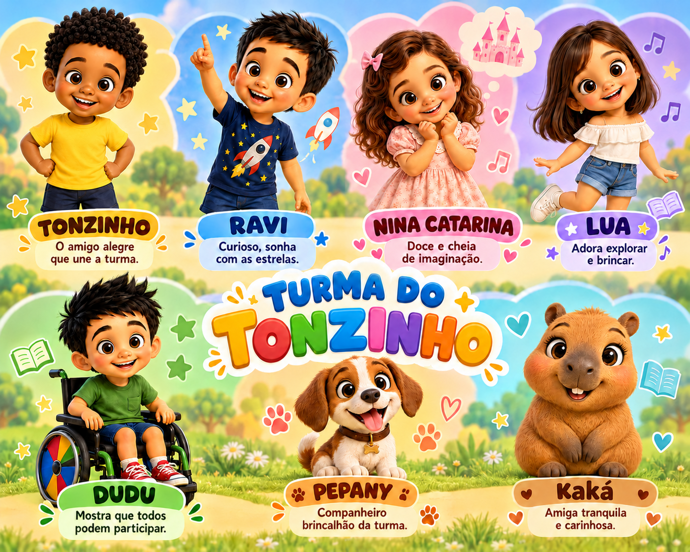
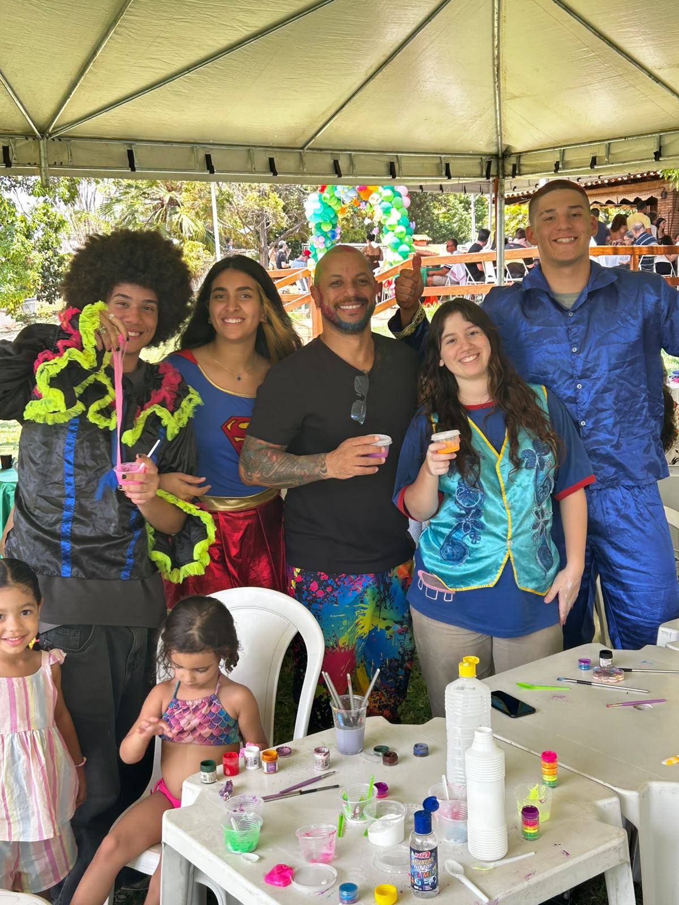
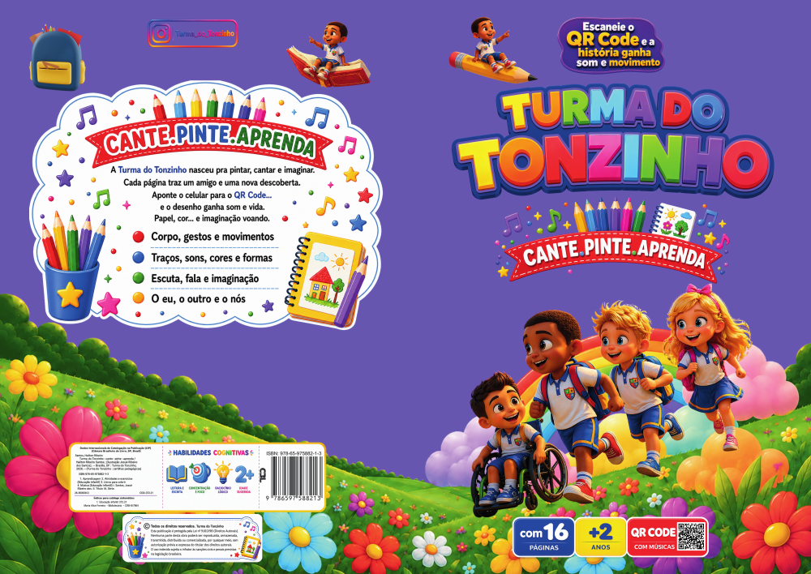
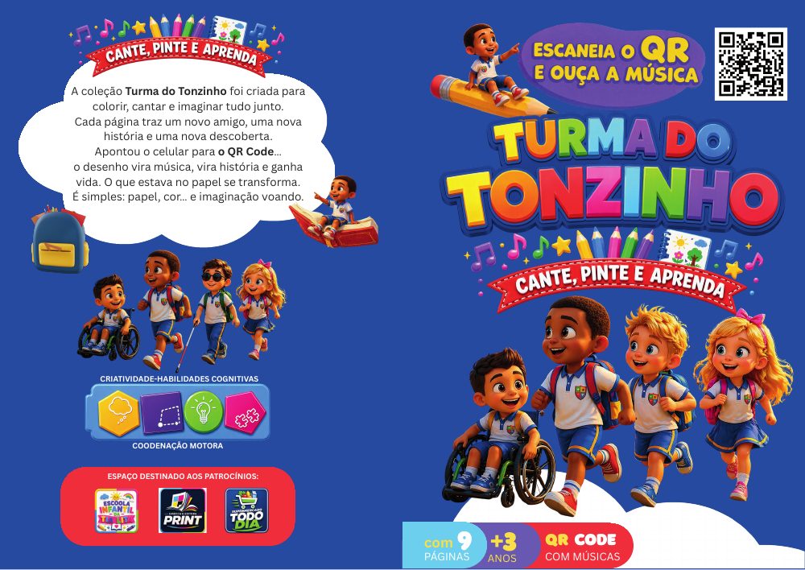
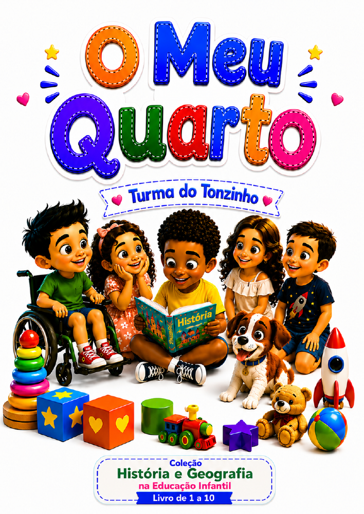
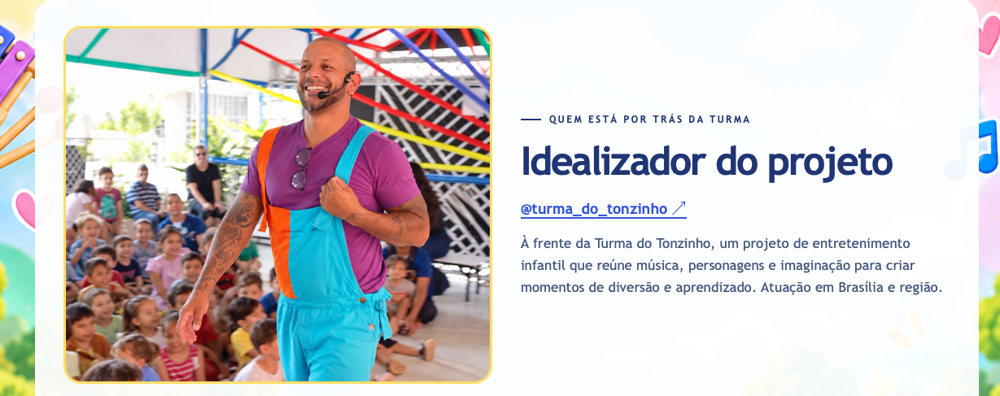

Tonzinho
O amigo alegre que une a turma.
PEQUENOS MOMENTOS. GRANDES SORRISOS.
Música, brincadeiras e um mundo de imaginação. A Turma do Tonzinho leva a magia da infância para o seu evento.
Conheça nossas apresentações ↗
✦✧AMIZADE, MÚSICA E MUITA IMAGINAÇÃO
Cada personagem tem um jeitinho especial. Juntos, fazem a alegria acontecer!
O amigo alegre que une a turma.
Curioso, sonha com as estrelas.
Doce e cheia de imaginação.
Adora explorar e brincar.
Mostra que todos podem participar.
Companheiro brincalhão da turma.
Amiga tranquila e carinhosa.
CANTAR • CRIAR • BRINCAR • PARTICIPAR
Shows musicais interativos, colônias de férias, bailinhos, festivais e eventos infantis, com músicas autorais, personagens, brincadeiras, dança e atividades lúdicas.
Diversão, cultura e aprendizagem para toda a família!
Leve essa experiência ao seu evento ↗
Banda ao vivo e personagens
Músicas autorais, dança e muita interação para cantar junto e viver a magia da turma.
Quero saber maisInstrumentos, ritmos e sons
Uma experiência de exploração musical em que as crianças tocam, descobrem e participam.
Quero saber maisArte, cores e imaginação
Pintura, desenho e expressão artística para criar, experimentar e soltar a imaginação.
Quero saber maisInteração, movimento e diversão
Brincadeiras, desafios e dinâmicas em grupo para se expressar, fazer amigos e se divertir.
Quero saber maisNa Turma do Tonzinho, a criança não fica apenas assistindo.Ela canta, toca, pinta, brinca, cria e participa!

OFICINAS DE PINTURA E CRIAÇÃO
Aqui, cada cor é um convite para imaginar. Entre pincéis, tintas e descobertas, as crianças misturam ideias, inventam formas e transformam a criatividade em arte.
Nas oficinas da Turma do Tonzinho, o mais bonito é o prazer de experimentar: desenhar, pintar, explorar materiais e criar do seu próprio jeitinho. Uma experiência lúdica que estimula a imaginação, a expressão e a coordenação motora — com muita alegria em cada pincelada!
A imaginação escolhe as cores. A diversão faz o resto!
Quero uma oficina no meu evento ↗MEMÓRIAS QUE GANHAM COR
Encontros, música e momentos especiais.
Toque nas fotos para ver de pertinho.
UM CONVITE PARA A DIVERSÃO
Escolha o cenário.
A gente leva a imaginação.
Hoje é dia de
celebrar!
O dia dos pequenos ganha música, brincadeiras e uma apresentação que convida todo mundo a participar.
Quero na minha festa ↗Aprender também
é brincar.
Uma pausa cheia de descobertas, interação e histórias para tornar os encontros da escola ainda mais especiais.
Levar para a escola ↗A turma toda
se diverte!
Diversão para reunir as famílias em empresas, espaços de lazer e celebrações com os pequenos.
Planejar meu evento ↗NOSSA TURMA NOS EVENTOS
Assista a momentos das nossas apresentações.
Ver todas as apresentações →NOSSA BIBLIOTECA
Baixe as cartilhas, imprima e solte a imaginação com as cores!
3 materiais disponíveis

Uma aventura para cantar, pintar e aprender com a turma. Explore as páginas e deixe a imaginação ganhar novas cores.

Uma cartilha da coleção Cante, Pinte e Aprenda, com ilustrações para explorar e um QR Code para acompanhar a música.

Uma história com Tonzinho e Pepany, acompanhada de atividades sobre identidade, preferências e os espaços do dia a dia.
Convide um adulto para acompanhar a leitura, separe os lápis de cor e deixe a curiosidade guiar a brincadeira. Nas cartilhas, os QR Codes convidam a continuar a descoberta com música!
DO PRIMEIRO OI AO ÚLTIMO APLAUSO
Qual é a ocasião, a data e onde a diversão vai acontecer?
Conversamos sobre a faixa etária, o espaço e o formato da apresentação.
Com tudo combinado, é só preparar os sorrisos e deixar a imaginação entrar.
VAMOS CRIAR ESSA MEMÓRIA?
Conte um pouquinho do que você está imaginando e prepare os detalhes para conversar com a nossa turma.
✳ANTES DE ABRIR AS CORTINAS
São atividades com música ao vivo, nas quais as crianças participam ativamente, explorando instrumentos musicais, ritmos, sons e movimentos. Uma experiência divertida em que elas deixam de ser apenas espectadoras e passam a fazer parte da música!
As crianças participam de oficinas criativas de pintura, desenho e expressão artística, utilizando cores, materiais e diferentes técnicas para desenvolver a imaginação, a criatividade e a coordenação motora.
Sim! A Turma do Tonzinho oferece atividades interativas com brincadeiras, dinâmicas em grupo, desafios divertidos e muita participação infantil. Tudo pensado para estimular a socialização, a expressão e a alegria das crianças.
O show é da Turma do Tonzinho, com banda ao vivo e bonecos infantis dos nossos personagens. Uma apresentação cheia de música, alegria e interação para encantar as crianças!
Separe a data, a cidade, o local, a faixa etária e a quantidade estimada de crianças. Informe também o tempo de apresentação desejado.

QUEM ESTÁ POR TRÁS DA TURMA
Músico e professor
Idealizador da Turma do Tonzinho.
À frente da Turma do Tonzinho, um projeto de entretenimento infantil que reúne música, personagens e imaginação para criar momentos de diversão e aprendizado.
Com apresentações em Brasília e região, cada encontro é feito para acolher, brincar e deixar memórias boas.